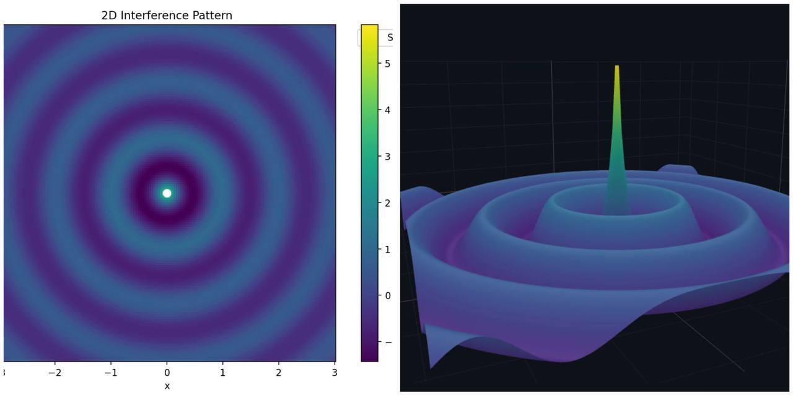
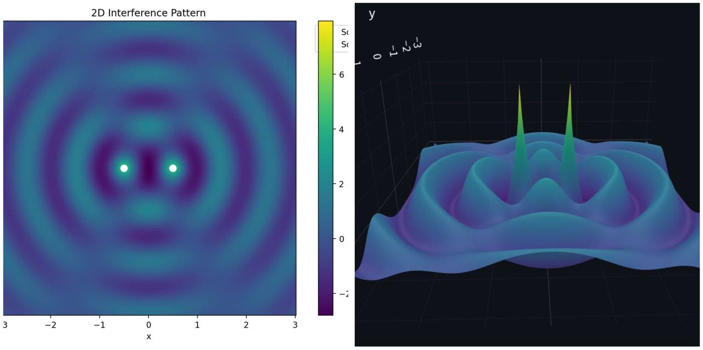
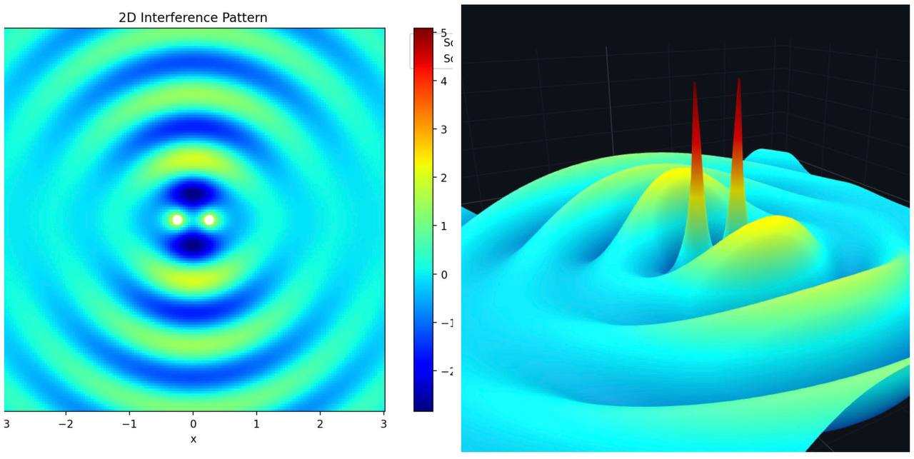
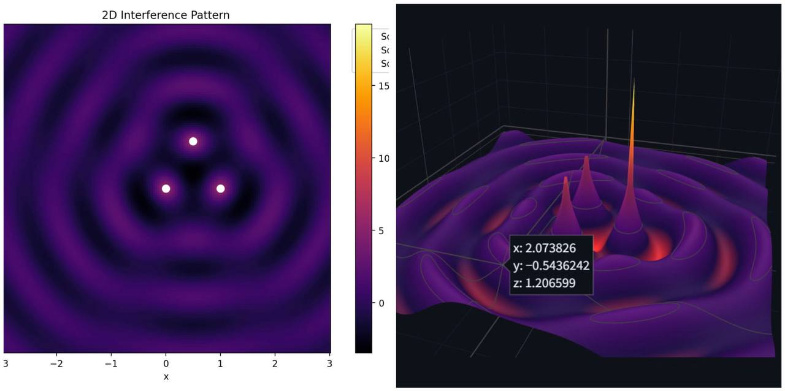
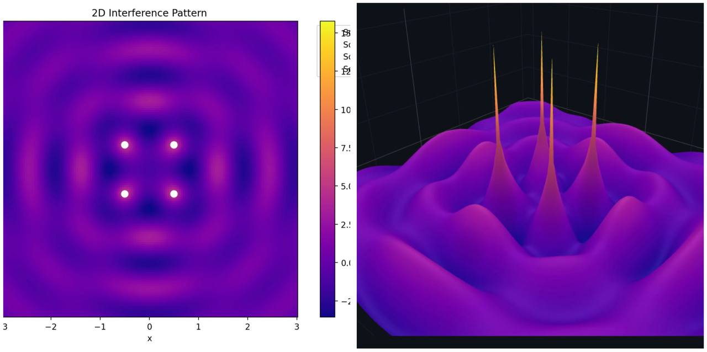
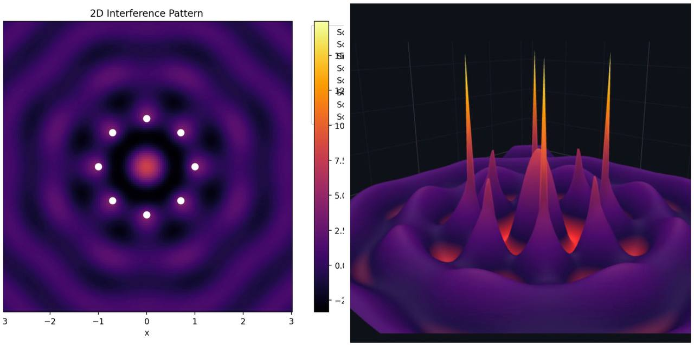

Problem 1
Interference Patterns on a water surface
Step 1: Select a Regular Polygon
We choose an equilateral triangle with side length \(a\). Place the triangle in the \(xy\)-plane with its vertices at: - Vertex 1: \((x_1, y_1) = (0, 0)\) - Vertex 2: \((x_2, y_2) = (a, 0)\) - Vertex 3: \((x_3, y_3) = \left( \frac{a}{2}, \frac{a\sqrt{3}}{2} \right)\)
These coordinates ensure the triangle is equilateral, as the distances between vertices are all equal to \(a\).
Step 2: Position the Sources
The point wave sources are placed at the vertices of the triangle: - Source 1 at \((0, 0)\) - Source 2 at \((a, 0)\) - Source 3 at \(\left( \frac{a}{2}, \frac{a\sqrt{3}}{2} \right)\)
Step 3: Wave Equations
Each source emits a circular wave described by the given equation: $$ \eta(x, y, t) = \frac{A}{\sqrt{r}} \cdot \cos(kr - \omega t + \phi) $$ where: - \(r = \sqrt{(x - x_i)^2 + (y - y_i)^2}\) is the distance from source \(i\) at \((x_i, y_i)\) to point \((x, y)\). - \(A\), \(k\), \(\omega\), and \(\phi\) are the same for all sources (same amplitude, wavelength, frequency, and initial phase). - Assume \(\phi = 0\) for simplicity, as the waves are coherent with a constant phase difference (which we can set to zero without loss of generality).
For each source: - Source 1 (\(i=1\)): \(r_1 = \sqrt{x^2 + y^2}\) $$ \eta_1(x, y, t) = \frac{A}{\sqrt{r_1}} \cos(kr_1 - \omega t) $$ - Source 2 (\(i=2\)): \(r_2 = \sqrt{(x - a)^2 + y^2}\) $$ \eta_2(x, y, t) = \frac{A}{\sqrt{r_2}} \cos(kr_2 - \omega t) $$ - Source 3 (\(i=3\)): \(r_3 = \sqrt{\left(x - \frac{a}{2}\right)^2 + \left(y - \frac{a\sqrt{3}}{2}\right)^2}\) $$ \eta_3(x, y, t) = \frac{A}{\sqrt{r_3}} \cos(kr_3 - \omega t) $$
Step 4: Superposition of Waves
The total displacement at point \((x, y)\) and time \(t\) is the sum of the displacements from all sources: $$ \eta_{\text{sum}}(x, y, t) = \eta_1(x, y, t) + \eta_2(x, y, t) + \eta_3(x, y, t) $$ $$ \eta_{\text{sum}}(x, y, t) = \sum_{i=1}^3 \frac{A}{\sqrt{r_i}} \cos(kr_i - \omega t) $$
Step 5: Analyze Interference Patterns
To identify constructive and destructive interference: - Constructive interference occurs when the waves are in phase, i.e., the phase difference \(k(r_i - r_j)\) is a multiple of \(2\pi\), so \(|r_i - r_j| = m\lambda\), where \(m\) is an integer and \(\lambda = \frac{2\pi}{k}\). - Destructive interference occurs when the waves are out of phase by \(\pi\), i.e., \(|r_i - r_j| = (m + \frac{1}{2})\lambda\).
Since \(r_i\) depends on the position \((x, y)\), we evaluate \(\eta_{\text{sum}}\) over a grid of points. Set \(t = 0\) for simplicity: $$ \eta_{\text{sum}}(x, y, 0) = \sum_{i=1}^3 \frac{A}{\sqrt{r_i}} \cos(kr_i) $$ The intensity is approximately \(I \propto |\eta_{\text{sum}}|^2\), but we can plot \(\eta_{\text{sum}}\) to see crests and troughs.
Single Source:

Two Sorces:

Double Slit:

Triangle:

Square:

Circle(8 sources):
